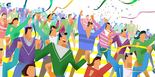

|  |
Standing OvationBy Talha Oz |
The Standing Ovation model proposed by Miller and Page (2004) illustrates a familiar decision-making problem: at the end of a performance the audience begins to applaud. The applause builds and a few members of the audience decide to stand up in enthusiastic recognition. In this situation every other member of the audience must decide whether to join the standing individuals in their ovation, or else remain seated. It is not a trivial decision; imagine, for example, that you initially decide to stay down quietly but then find yourself surrounded by people standing and clapping vigorously. It seems plausible that you may feel awkward, change your mind and end up standing up, saving yourself a significant dose of potential embarrassment. Analogously, you probably wouldn't enjoy being the only person standing and clapping alone in the middle of a crowded auditorium of seated people.